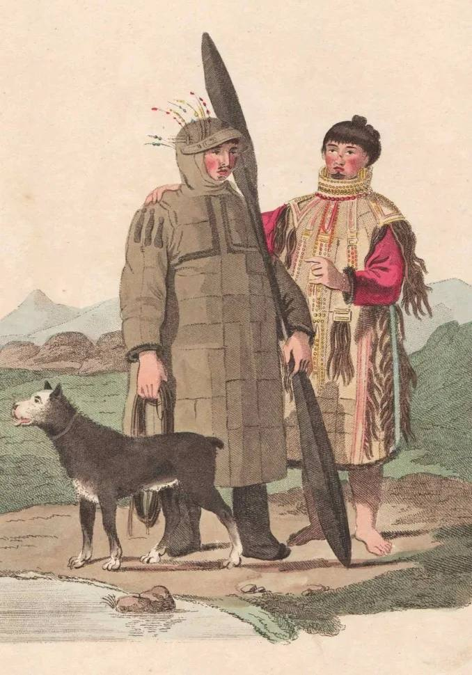
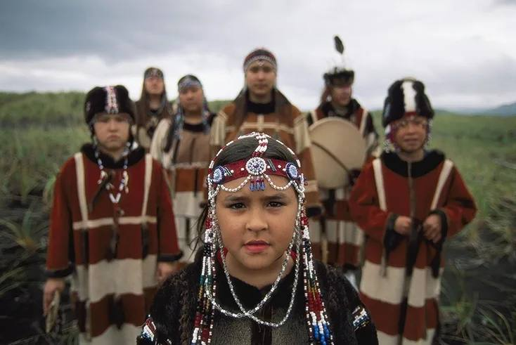

История
| Главная | История | Язык | Культура | Традиции | Религия | Об авторе | Источники | |
|
 Первая экспедиция на Алеутские острова
 Алеуты в традиционной одежде |
Долгое время существовали две гипотезы происхождения алеутов: Согласно одной, алеуты пришли с северо-восточного азиатского побережья. Согласно другой, — с Аляски. История изучения алеутов начинается со времени открытия в 1741 году Алеутских островов Великой Северной (Второй Камчатской) экспедицией (1733–1743). Русские мореплаватели, исследователи, промышленники собирали данные о культуре народа. Некоторые события из истории алеутов: С 1820-х годов Российско-Американская компания начала переселять алеутов из американского континента на острова у азиатского побережья России. В 1923 году на Командорах установилась советская власть. В 1923–1991 годах проводилась политика унификации и советизации, и население островов практически полностью перешло на русский язык. |